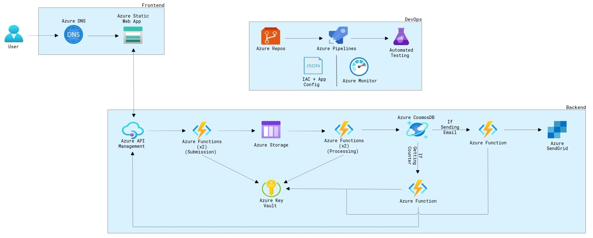

- Operating Systems: Windows, macOS, Linux/UNIX
- Cloud Services: Azure, AWS and GCP
- Web Design with HTML & CSS.
- Software as a Service (SaaS)
- Networking: TCP/IP, DHCP, DNS, LAN/WAN
- Organization Operations & Administrative
- Programming Languages: HTML, Phyton, JavaScript, & CSS 3
- Hardware: PC components, laptops, printers, scanners
- PowerShell, Microsoft Office 365 administration, VMware, Hyper-V
- Soft Skills: Effective communication, team collaboration, time management, problem-
solving, multitasking
- Collaborated with the IT team to develop new troubleshooting guides and FAQs for the
company knowledge base.